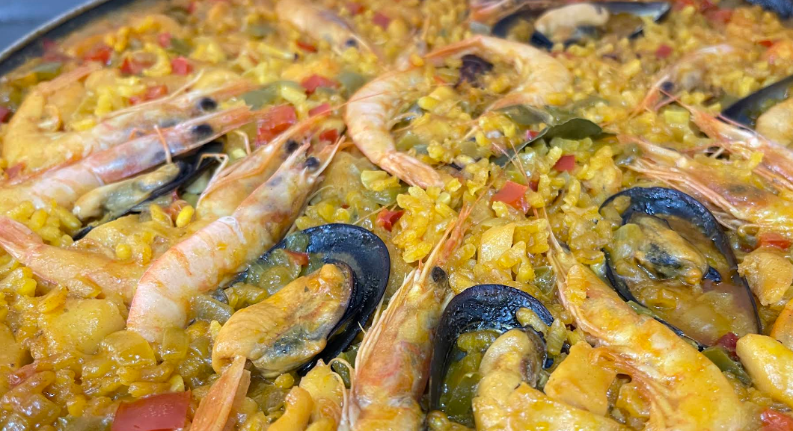
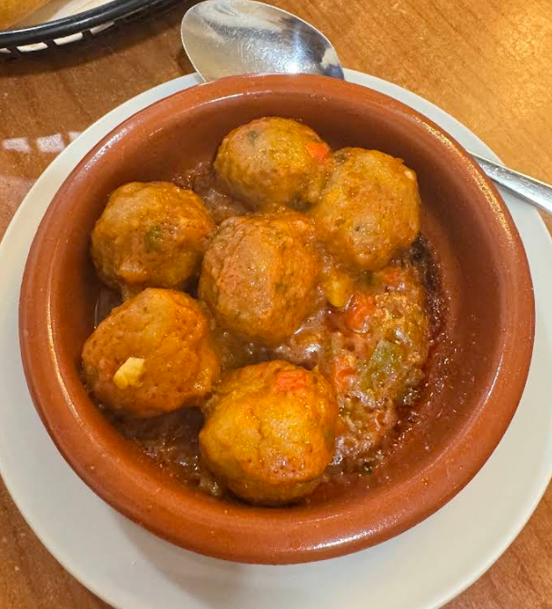

Nuestros Servicios en Marisquería Capitán I

Paella
De nuestros arroces destacamos la paella de marisco, con productos frescos y de calidad

Pescaito frito
Disfruta de nuestro pescado en una terraza ideal para el clima de Málaga, con un ambiente cálido y servicio amable que te hará sentir como en casa.

Albondigas
Seleccionamos carnes de la más alta calidad, preparado al momento para dar el mejor sabor